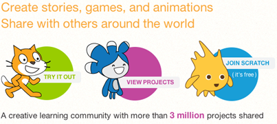

Extend Yourself - Scratch: Program to Solve Word Problems
 Another Math Program
Another Math Program
Write another computer program using multiplication or division Operator blocks.
Practice solving difficult problems that include an unknown whole number. When a multiplier or dividend is not provided in an equation that does give an answer, experiment with the numbers placed in Operator blocks to see what your sprite "says." When your sprite gives the correct answer, you know that you have inserted the correct unknown whole number into the operator block.
There are many other ways to include math in Scratch programs, including inserting random numbers and rounding numbers. Check out their math project tutorials for inspiration: Scratch.
Explore More Scratch Resource
- Explore more video tutorials.
- View projects. See what others do with Scratch.
- Learn how to share your project on the Internet.
